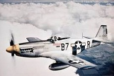
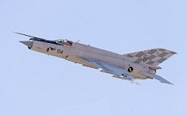
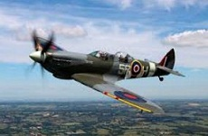

MOST POPULAR

P-51
USA
The P-51 was a symbol of hope and victory for the soldiers on the ground and the pilots in the air.
(insert national flag)

Mig-21
USSR
The Mig-21 was a feared fighter/interceptor built by the Soviet Union. Famous for its presence in the Vietnam War
(insert national flag)

A6M Zero
Imperial Japan
The A6M Zero was a fighter that was most feared by Navy Airmen in the pacific. Made by Mitsubishi for the Imperial Japanese Army Air Force. Its light airframe and high caliber cannons made it a very efficient dogfighter.
(insert national flag)

Spitfire
UK
The Supermarine Spitfire was the pride and joy of the Royal Air Force. Excellent maneuverability combined with excellent airmen made it a deadly adversary for the Germans in
World War 2
World War 2
(insert national flag)